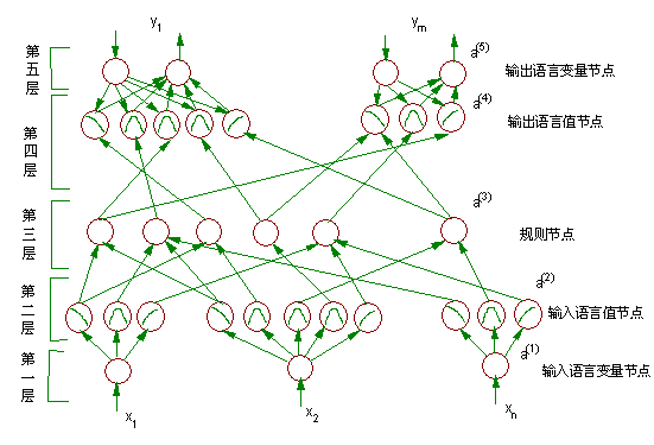
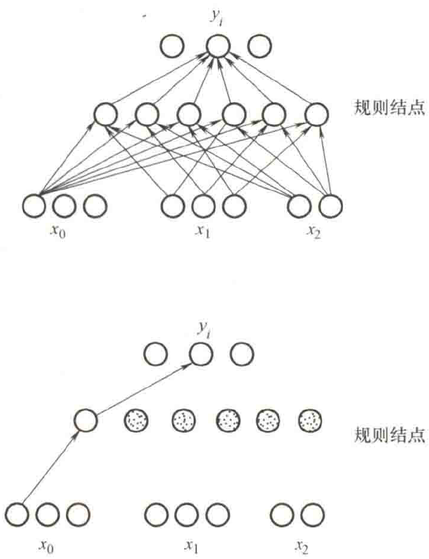
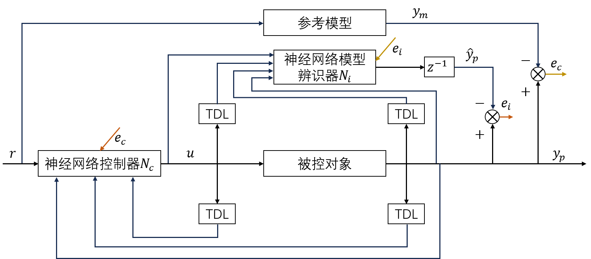
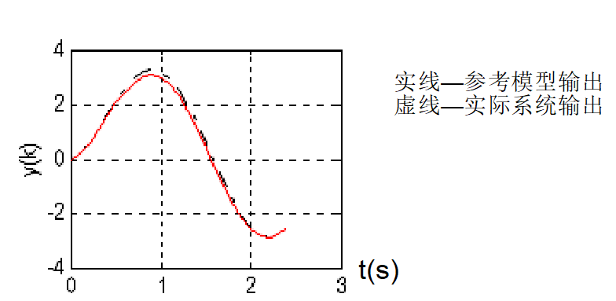
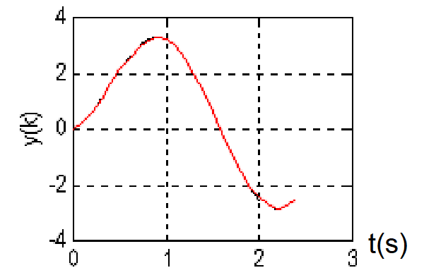
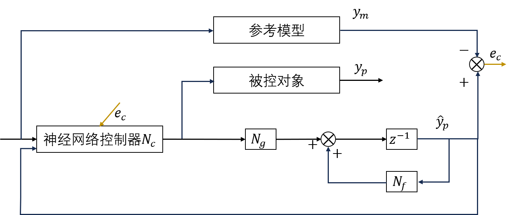

第 1 页
LECTURE 7
第七讲 智能控制的集成技术
模糊神经网络控制 · 基于神经网络的自适应控制 · 智能控制的优化算法
第 2 页
本章内容
- 模糊神经网络控制——五层结构 · 两阶段学习（自组织 + 有导师 BP）（第 3–22 页）
- 基于神经网络的自适应控制——模型参考自适应 · 动态 BP 学习（第 23–32 页）
- 智能控制的优化算法——遗传算法 · 蚁群算法 · 迭代学习控制（第 33–50 页）
第 3–4 页
一、模糊神经网络控制：提出与系统结构
1. 方法的提出（第 3 页）
模糊控制系统的隶属度函数或控制规则的设计方法存在很大的主观性。提出模糊神经网络理论的两个基本出发点：
- 1利用神经网络的学习功能来优化模糊控制规则和相应的隶属度函数；
- 2将一些专家知识预先分布到神经网络中去。
即：模糊系统提供"可解释的推理框架"，神经网络提供"可学习的参数调节能力"。
2. 系统结构（第 4 页）
用多层前向传播神经网络结构来逼近的模糊神经网络系统：

模糊神经网络系统结构图（五层）
结构说明：
- 第一层：输入节点，表示语言变量；
- 第二层、第四层：项节点，表示相应语言变量语言值的隶属度函数；
- 第三层：规则节点，实现模糊逻辑推理——第三、四层节点间的连接系数定义规则节点的结论部，第二、三层节点间的连接系数定义规则节点的条件部；
- 输出层：每个输出变量有两个语言节点——一个用于训练时期望输出信号的馈入，另一个表示推理控制的输出信号节点。
第 5–9 页
五层节点的功能与公式
第一层：输入层（第 5 页）
只将输入变量值直接传送到下一层：
$$f_j^{(1)}=u_j^{(1)},\qquad a_j^{(1)}=f_j^{(1)}$$
且输入变量与第一层节点之间的连接系数 $w_{ji}^{(1)}=1$。
第二层：隶属度函数层（第 6 页）
实现语言值的隶属度函数变换，可选取钟型函数：
$$f_j^{(2)}=M_{X_i}^{j}\bigl(m_{ji}^{(2)},\sigma_{ji}^{(2)}\bigr)=-\frac{\bigl(u_i^{(2)}-m_{ji}^{(2)}\bigr)^{2}}{\bigl(\sigma_{ji}^{(2)}\bigr)^{2}},\qquad a_j^{(2)}=e^{f_j^{(2)}}$$
其中 $m_{ji}$ 和 $\sigma_{ji}$ 分别表示第 i 个输入语言变量 $X_i$ 的第 j 个语言值隶属度函数的中心值和宽度。可抽象看作第一、二层神经元节点之间的连接系数 $w_{ji}^{(2)}$。
第三层：规则节点层（第 7 页）
完成模糊逻辑推理条件部的匹配工作。由最大、最小推理规则可知，规则节点实现的功能是模糊"与"运算：
$$f_j^{(3)}=\min\bigl(u_1^{(3)},u_2^{(3)},\dots,u_p^{(3)}\bigr),\qquad a_j^{(3)}=f_j^{(3)}$$
且第二层节点与第三层节点之间的连接系数 $w_{ji}^{(3)}=1$。
第四层：输出语言值层（第 8 页，两种模式）
- 从上到下的传输模式时，与第二层相同，实现模糊化的功能；
- 从下到上的传输模式中，实现模糊逻辑推理运算——根据最大、最小推理规则，是模糊"或"运算：
$$f_j^{(4)}=\max\bigl(u_1^{(4)},u_2^{(4)},\dots,u_p^{(4)}\bigr),\qquad a_j^{(4)}=f_j^{(4)}$$
且第三、四层节点之间的连接系数 $w_{ji}^{(4)}=1$。
第五层：输出层（第 9 页，两种模式）
从上到下的信号传输方式同第一层；从下到上是精确化计算，如果采用重心法，有：
$$f_j^{(5)}=\sum_i w_{ji}^{(5)}u_i^{(5)}=\sum_i\bigl(m_{ji}^{(5)}\sigma_{ji}^{(5)}\bigr)u_i^{(5)},\qquad a_j^{(5)}=\frac{f_j^{(5)}}{\sum_i\sigma_{ji}^{(5)}u_i^{(5)}}$$
则第四层节点与第五层节点之间的连接系数 $w_{ji}^{(5)}$ 可以看作是 $m_{ji}^{(5)}\cdot\sigma_{ji}^{(5)}$。
第 10–12 页
学习算法：第一阶段——自组织学习
两阶段总览（第 10 页）
- 第一阶段（自组织学习）：进行各语言变量语言值隶属度函数的初步定位，并尽量发掘模糊控制规则的存在性（可以通过自组织学习删除部分不可能出现的规则）；
- 第二阶段（有导师学习）：改进和优化期望输出的各语言值隶属度函数。
自组织学习的任务设定：给定一组输入样本数据 $x_i(t),\ i=1,2,\dots,n$、期望的输出值 $y_i(t),\ i=1,2,\dots,m$、模糊分区 $|T(x)|$ 和 $|T(y)|$ 以及期望的隶属度函数类型（即三角型、钟型等）。学习的目的是找到隶属度函数的参数和系统实际存在的模糊逻辑控制规则。
中心值估计：Kohonen 自组织映射法（第 11 页）
率先利用样本确定隶属度函数的均值和方差：均值（中心值）$m_i$ 的估计用 Kohonen 自组织映射法；方差（宽度值）$\sigma_i$ 与重叠参数 r 以及中心点 $m_i$ 邻域内分布函数值相关。经过一段时间的学习后，权值的分布可以近似地看作输入随机样本的概率密度分布。学习过程是一个 Winner-take-all 的过程：
$$\bigl\|x(t)-m_{\text{closest}}(t)\bigr\|=\min_{1\le i\le k}\bigl\{\|x(t)-m_i(t)\|\bigr\}$$
$$m_{\text{closest}}(t+1)=m_{\text{closest}}(t)+\alpha(t)\bigl[x(t)-m_{\text{closest}}(t)\bigr]$$
$$m_i(t+1)=m_i(t)\qquad\text{当 } m_i(t)\ne m_{\text{closest}}(t)$$
其中 $k=|T(x)|$ 表示语言变量 x 语言值的数目；$m_i(0)$ 为一个小的随机数。
宽度 σ 的计算（第 12 页）
一旦确定了 $m_i$ 后，再计算宽度 $\sigma_i$：通过求下列目标函数的极小值来获取：
$$E=\frac{1}{2}\sum_{i=1}^{N}\Bigl[\sum_{j\in N_{\text{nearest}}}\Bigl(\frac{m_i-m_j}{\sigma_i}\Bigr)\Bigr]^{2}$$
其中 r 为重叠参数。也可以采用一阶最近邻域法近似：
$$\sigma_i=\frac{\bigl|m_i-m_{\text{closest}}\bigr|}{r}$$
第 13–15 页
推理规则的确定、删除与合并
推理规则的确定（第 13 页）
即确定第三层规则节点和第四层输出语言值节点之间的连接关系，采用竞争学习获得。记 $o_i^{(3)}(t)$ 为规则节点的激励强度、$o_j^{(4)}(t)$ 为第四层输出语言值节点输出，则：
$$\Delta w_{ij}(t)=o_j^{(4)}\bigl(-w_{ij}(t)+o_i^{(3)}\bigr)$$
规则删除与合并（第 14 页）
规则删除：
- 仅保留规则节点与同一输出语言变量的所有语言值节点的连接系数最大的那个连接关系，将其余的连接关系删除；
- 当某一规则节点与某一输出语言变量所有语言值节点之间的连接系数都非常小时，则所有的连接关系都可以删除；
- 如果某一规则节点与第四层中的所有节点的连接系数都很少而被删除，则该规则节点对输出节点不产生任何影响，该规则节点可以删除。
规则合并的条件：
- 该组节点具有完全相同的结论部（如图 6-2 中输出变量 $y_i$ 中的第二个语言值节点）；
- 在该组规则节点中某些条件部是相同的（如图 6-2 中输入变量 $x_0$ 中的第一个语言值节点的输出与该组规则节点全部相连）；
- 该组规则节点的其它条件输入项包含了所有其它输入语言变量某一语言值节点的输出。
图 6-2：规则节点合并示例（第 15 页）

图 6-2 规则节点合并示例（合并前/合并后）
第 16–21 页
第二阶段：有导师学习（BP）
误差与学习总公式（第 16 页）
可采用 BP 学习：
$$E=\frac{1}{2}\bigl(y(t)-\hat{y}(t)\bigr)^{2}=\min$$
$$w(t+1)=w(t)+\eta\Bigl(-\frac{\partial E}{\partial w}\Bigr)$$
$$\frac{\partial E}{\partial w}=\frac{\partial E}{\partial(net)}\frac{\partial(net)}{\partial w}=\frac{\partial E}{\partial f}\frac{\partial f}{\partial a}\frac{\partial a}{\partial w}$$
反向传播：第五层（第 17 页）
反向传播到上一层的广义误差 $\delta^{(5)}$ 为：
$$\delta_j^{(5)}=-\frac{\partial E}{\partial f_j^{(5)}}=-\frac{\partial E}{\partial a_j^{(5)}}\frac{\partial a_j^{(5)}}{\partial f_j^{(5)}}=y(t)-\hat{y}(t)$$
$$\frac{\partial E}{\partial m_{ji}^{(5)}}=-\bigl[y(t)-\hat{y}(t)\bigr]\frac{\sigma_{ji}^{(5)}u_i^{(5)}}{\sum_i\sigma_{ji}^{(5)}u_i^{(5)}}$$
$$\frac{\partial E}{\partial \sigma_{ji}^{(5)}}=-\bigl[y(t)-\hat{y}(t)\bigr]\frac{m_{ji}^{(5)}u_i^{(5)}\bigl(\sum_i\sigma_{ji}^{(5)}u_i^{(5)}\bigr)-\bigl(\sum_i m_{ji}^{(5)}\sigma_{ji}^{(5)}u_i^{(5)}\bigr)u_i^{(5)}}{\bigl(\sum_i\sigma_{ji}^{(5)}u_i^{(5)}\bigr)^{2}}$$
反向传播：第四层（第 18 页）
没有任何参数进行更新。唯一需要做的是实现误差的反向传播计算：
$$\delta_j^{(4)}=\bigl(y(t)-\hat{y}(t)\bigr)\frac{m_{ji}^{(5)}\sigma_{ji}^{(5)}\bigl(\sum_i\sigma_{ji}^{(5)}u_i^{(5)}\bigr)-\bigl(\sum_i m_{ji}^{(5)}\sigma_{ji}^{(5)}u_i^{(5)}\bigr)u_i^{(5)}}{\bigl(\sum_i\sigma_{ji}^{(5)}u_i^{(5)}\bigr)^{2}}$$
反向传播：第三层（第 19 页）
如果输出语言变量有 m 个，则：
$$\delta_j^{(3)}=\frac{\partial E}{\partial f_j^{(3)}}=\delta_j^{(4)}\frac{f_j^{(4)}}{a_i^{(3)}}=\delta_j^{(4)},\qquad \delta_j^{(3)}=\sum_{k=1}^{m}\delta_k^{(4)}$$
反向传播：第二层（第 20–21 页）
第三层到第二层的误差传播：
$$q_k^{(3)}=\delta_k^{(3)}\quad(\text{当 } a_j^{(2)}\text{ 是第 } k \text{ 个规则节点输入值中的最小值时});\qquad q_k^{(3)}=0\quad(\text{其它})$$
$$\frac{\partial f_k^{(3)}}{\partial a_j^{(2)}}=\frac{\partial f_k^{(3)}}{\partial u_j^{(3)}}=\begin{cases}1 & \text{if }\ f_k^{(3)}=u_j^{(3)}=\min\bigl(u_1^{(3)},u_2^{(3)},\dots\bigr)\\ 0 & \text{otherwise}\end{cases}$$
$$\frac{\partial E}{\partial a_j^{(2)}}=\sum_k\delta_k^{(3)}\frac{\partial f_k^{(3)}}{\partial a_j^{(2)}}=\sum_k q_k^{(3)}$$
第二层参数（隶属度函数中心值与宽度）的学习公式：
$$m_{ji}^{(2)}(t+1)=m_{ji}^{(2)}(t)-\eta\frac{\partial E}{\partial a_j^{(2)}}\,e^{f_j^{(2)}}\frac{2\bigl(u_i^{(2)}-m_{ji}^{(2)}\bigr)}{\bigl(\sigma_{ji}^{(2)}\bigr)^{2}}$$
$$\sigma_{ji}^{(2)}(t+1)=\sigma_{ji}^{(2)}(t)-\eta\frac{\partial E}{\partial a_j^{(2)}}\,e^{f_j^{(2)}}\frac{2\bigl(u_i^{(2)}-m_{ji}^{(2)}\bigr)^{2}}{\bigl(\sigma_{ji}^{(2)}\bigr)^{3}}$$
第 22 页
整个学习流程
学习流程：训练样本数据 → 自组织分类得出隶属度函数中心值/宽度值 → 竞争学习得出模糊推理规则 → 规则删除 → 规则合并 → 有导师学习得出最佳隶属度函数
第 23–25 页
二、基于神经网络的自适应控制
1. 自适应控制要素与两种设计途径（第 23 页）
神经网络控制器完全满足自适应控制的要素：在线、实时地了解对象；有一个可调节环节；能使系统性能达到指标要求和最优。常规的神经网络控制器本身也具有一定的自适应能力。
与传统的自适应控制器一样，有两种不同的设计途径：
- 间接控制：通过系统辨识获取对象的数学模型，再根据一定的设计指标进行设计；
- 直接控制：根据对象的输出误差直接调节控制器内部参数来达到自适应控制的目的。
2. 模型参考自适应控制（第 24 页）
通过选择一个适当的参考模型和由稳定性理论设计的自适应算法，并利用参考模型的输出与实际系统输出之间的误差信号，由一套自适应算法计算出当前的控制量去控制系统，达到自适应控制的目的。
3. 模型参考自适应控制：算式（第 25 页）
如果被控系统：
$$y(k+1)=f\bigl(y(k),y(k-1),u(k-1)\bigr)+g\bigl(u(k)\bigr)$$
参考系统：
$$y_m(k+1)=a_1y_m(k)+a_2y_m(k-1)+r(k)$$
则控制输入可取：
$$u(k)=\hat{g}^{-1}\bigl\{-f\bigl[y(k),y(k-1),u(k-1)\bigr]+y_m(k+1)\bigr\}$$
第 26–29 页
神经网络模型参考自适应控制
1. 控制结构（第 26 页）

基于神经网络的模型参考自适应控制结构（参考模型 / 神经网络 $N_i$、$N_c$ / TDL / 被控对象；$e_c$ 控制误差、$e_i$ 辨识误差）
2. 举例：非线性对象（第 27 页）
非线性控制对象为：
$$y(k+1)=\frac{y(k)y(k-1)\bigl[y(k)+2.5\bigr]}{1+y^{2}(k)+y^{2}(k-1)}+u(k)$$
参考系统的模型为：
$$y_m(k+1)=0.6y_m(k)+0.2y_m(k-1)+r(k)$$
3. 举例：控制策略（第 28 页）
记 $f\bigl(y(k),y(k-1)\bigr)=\dfrac{y(k)y(k-1)[y(k)+2.5]}{1+y^{2}(k)+y^{2}(k-1)}$。如果取：
$$u(k)=-f\bigl(y(k),y(k-1)\bigr)+0.6y(k+1)+0.2y(k-1)+r(k)$$
则控制系统的误差方程为 $e_c(k+1)=0.6e_c(k)+0.2e_c(k-1)$，其中 $e_c(k+1)=y_p(k+1)-y_m(k+1)$，上述控制可渐渐稳定。
4. 神经网络实现与控制效果（第 29 页）
由于非线性方程 $f(\cdot)$ 是未知的，利用网络辨识模型取代未知的非线性方程 $f(\cdot)$，构成基于神经网络的模型参考自适应控制器：
$$u(k)=-N_i\bigl(y(k),y(k-1)\bigr)+0.6y(k)+0.2y(k-1)+r(k)$$
取 $r(k)=\sin(2\pi k/25)$。控制响应曲线：

神经网络模型参考自适应控制响应曲线（实线—参考模型输出，虚线—实际系统输出，两者几乎重合）
确定导师信号 $t_j(k+1)=y_p(k+1)-u(k)$ 进行在线辨识。在线辨识后的控制效果：

在线辨识后的控制效果（$y(k)$ 跟踪期望轨迹）
第 30–32 页
复杂情况与动态 BP 学习算法
1. 复杂情况（第 30 页）
对于 $y(k+1)=f\bigl(y(k),y(k-1),u(k-1)\bigr)+g\bigl(u(k)\bigr)$，可得：
$$u(k)=\hat{g}^{-1}\bigl\{-N_f\bigl[y(k),y(k-1),u(k-1)\bigr]+y_m(k+1)\bigr\}$$
如果 $\hat{g}^{-1}$ 存在，可用神经网络逼近之；如不存在，可采用动态 BP 学习算法。
2. 动态 BP 学习算法（第 31 页）
设网络模型 $\hat{y}(k+1)=N_f\bigl(y(k)\bigr)+N_g\bigl(u(k)\bigr)$ 已离线精确获得。训练控制网络，使下列标准最小：
$$e_c(k)=\hat{y}_p(k)-y_m(k),\qquad J_c=\sum_{k=1}^{T_c}\bigl\|e_c(t+k)\bigr\|^{2}$$
3. 结构图（第 32 页）

动态 BP 学习结构（参考模型 / 被控对象 / 神经网络 $N_u$、$N_f$ / 控制器 $N_c$ / 延迟环节 $z^{-1}$）
第 33–39 页
三、智能控制的优化算法：遗传算法
1. 遗传算法的提出（第 33 页）
美国的 J. Holland 教授于 1975 年提出；在遗传学的基础上利用计算机来模拟生物的进化过程，从而实现复杂问题的优化求解。模拟生物染色体的运作（复制、交叉、变异），是一种随机化搜索算法。
2. 步骤（第 34 页）
- 1群体的初始化；
- 2评价群体中每一个体的性能；
- 3选择下一代个体；
- 4执行简单的操作算子（如交叉、变异）；
- 5评价下一代群体的性能；
- 6判断终止条件满足否？若不，则转 (3) 继续；若满足，则结束。
3. 需要解决的问题与操作算子（第 35 页）
需要解决的问题：编码机制；选择机制；控制参数选择；二进制字符串的群体构成；适应度函数的计算；遗传算子（交叉、变异）的定义。
遗传学习算法的操作算子：编码机制（Encoding mechanism）· 适应度函数（Fitness function）· 选择机制（Selection mechanism）· 交叉算子（Crossover）· 变异算子（Mutation）。
4. 编码机制与适应度函数（第 36 页）
编码机制：二进制编码（每一个位 0 或 1 ——基因；字符串——染色体）、多值编码方法、实数编码。
适应度函数：优化问题的目标函数；"适应度值"的计算直接通过将目标函数经一定的线性变换映射到 [0, 1] 区间内的一个值。
5. 选择机制（第 37 页）
基本思想取自于自然界进化论的"适者生存"：适应度值越高的个体，生存的数量也越高，满足"优胜劣汰"自然法则，也可称为复制机制。常用方法：比例选择法（Proportionate selection scheme）；转轮选择法（Roulette Wheel Selection Scheme，随机方法）。
6. 交叉算子（第 38 页）
模拟有性繁殖现象：随机地从父辈集合中选取两个个体作为双亲。设 $L_l$ 表示任一个体的字符串（染色体）长度，随机地产生（0～$L_l$）之间的一个数 d，并把此点位置称为交叉点。交叉运算就是将双亲的基因链在交叉点断裂，且将在交叉点之后的基因根据交叉率的条件决定是否进行相互交换形成下一代。交叉率 $p_c$ 是根据优化问题预先确定的 0～1 之间的值，通常取 0.6～0.9。
7. 变异算子与一般过程（第 39 页）
变异算子：模拟基因突变现象——随机地选取染色体中的某个基因（字符串的某一位）进行取反运算，即将原有的"1"变为"0"和反之。变异率 $p_m$ 取比较小的数值，一般 $p_m$ 为 0.001～0.2。
一般过程：① 群体初始化；② 繁殖；③ 交叉；④ 变异；⑤ 终止准则判断，若不满足，重复②～④；否则，搜索结束。
第 40–46 页
蚁群算法
1. 蚁群算法的提出（第 40 页）
Dorigo、Maniezzo、Colomi 等人于 1991 年提出；模拟昆虫王国中蚂蚁群体智能行为的仿生优化算法：当它们碰到一个还没走过的路口时，会随机地选择一个路径，并在走过的路径上释放信息素，蚂蚁所走的路径越长，则释放的信息素量就越小；当后来的蚂蚁再次路过这个路径时，选择信息量较大的路径的概率相对较大，这样便形成了一个正反馈机制。
2. 基本原理（第 41 页）
- 蚂蚁种群之间进行通讯信息交换经由信息素与所处环境而决定。每只单个蚂蚁在选择路径时是根据其周围的局部环境做出相对应的反应，只对本身经过的路径做反应，而不对其他蚂蚁所经过的路径信息素做任何反应；
- 蚂蚁做出的相应反应是由其内部状态决定的。蚂蚁个体虽简单，但内部状态中存储着许多自身过去的信息量，在路径选择上会依靠群体其他个体释放的信息素，选择最优路线；
- 对于单个蚂蚁来说，每只蚂蚁仅会对自处环境做独立选择；对于整个蚂蚁种群来说，单个蚂蚁会将路径中信息素多的作为优选，经过一段时间最终整个蚁群以高效有序的自组性选择最短路径。
3. 基本机制：两个阶段（第 42 页）
- 适应阶段：整个蚂蚁种群各自集合自身释放出的信息素，并不断调整自身结构——种群经过的路径蚂蚁数量越多则具有的信息素就越多，该路径成为最佳路径的机率就越大；而随着时间的推移，路径中的信息素数量随之降低，被选概率受到影响；
- 协作阶段：蚂蚁种群通过相互的通讯交流中主要传递的是个体自身信息量的多少，进而获取性能更加完善的最优解。
4. 原始模型①：蚁群规模（第 43 页）
以旅行商问题为例推导蚁群算法：在两城市之间寻找最优和最短路线。设定 $b_i(t)$ 为 t 时刻位于元素 i 的蚂蚁数目，$\tau_{ij}(t)$ 为 t 时刻路径 (i, j) 上的信息量，n 表示旅行商问题的规模程度，m 为蚁群中蚂蚁的总数量值。因此：
$$m=\sum_{i=1}^{n}b_i(t)$$
5. 原始模型②：路径方向选择（第 44 页）
蚁群中的单个蚂蚁采用随机比例规则，在整个运动过程中依照各条路径上具有的信息素量程度来决定其方向的选择性。在 t 时刻，蚂蚁 k（k=1, 2, 3, …, m）在城市 i 选择城市 j 的转移概率：
$$p_{ij}^{k}(t)=\begin{cases}\dfrac{\tau_{ij}^{\alpha}(t)\eta_{ij}^{\beta}(t)}{\sum_{s\in allowed\,k}\tau_{is}^{\alpha}(t)\eta_{is}^{\beta}(t)} & j\in allowed\,k\\ 0 & \text{otherwise}\end{cases}$$
- $allowed\,k=\{0,1,\dots,n-1\}$——蚂蚁 k 下一步允许选择的城市；
- $\alpha$——信息启发式因子，代表轨迹的相对重要性；
- $\beta$——期望启发式因子，代表能见度的相对重要性；
- $\eta_{ij}(t)$——启发函数，$\eta_{ij}(t)=\dfrac{1}{d_{ij}}$；$d_{ij}$——相邻两个城市之间的距离。
6. 原始模型③：信息素更新（第 45 页）
为避免路径上过多残留信息素长时间被掩埋，每只蚂蚁在走完每一步路径或完成城市间所有路径后，会对残留信息进行进一步更新处理。在 t+n 时刻路径 (i, j) 上的信息量：
$$\tau_{ij}(t+n)=(1-\rho)\tau_{ij}(t)+\Delta\tau_{ij}(t)$$
$$\Delta\tau_{ij}(t)=\sum_{k=1}^{m}\Delta\tau_{ij}^{k}(t)$$
式中 $\rho$ 为信息素挥发系数，$1-\rho$ 为信息素残留因子，$\rho$ 的取值范围为 [0, 1]；$\Delta\tau_{ij}(t)$ 为本次循环中路径 (i, j) 上的信息素增量，初始时刻设 $\Delta\tau_{ij}(0)=0$。更新规律：
$$\Delta\tau_{ij}^{k}(t)=\begin{cases}\dfrac{Q}{L_k} & \text{若第 } k \text{ 只蚂蚁在本次循环中经过 } (i,j)\\ 0 & \text{否则}\end{cases}$$
其中 Q 为信息素强度（影响算法的收敛程度）；$L_k$ 为第 k 只蚂蚁在本次循环中所走路径的总长度。
7. 应用范围（第 46 页）
第 47–50 页
迭代学习控制
1. 迭代学习与二阶非线性系统（第 47 页）
迭代学习（Iterative learning）的基本思想在于总结人类学习的方法，即通过多次的训练，从经验中学会某种技能。迭代学习控制是智能控制中具有严格数学描述的一个分支：它以极为简单的学习算法，在给定的时间区间上实现未知被控对象以任意精度跟踪某一给定的期望轨迹的控制问题。
二阶非线性动力系统：引入变量 $x_2(t)=\dot{x}_1(t)$：
$$\begin{bmatrix}\dot{x}_1(t)\\ \dot{x}_2(t)\end{bmatrix}=\begin{bmatrix}x_2(t)\\ f_1\bigl(x_1(t),x_2(t),t\bigr)\end{bmatrix}+\begin{bmatrix}0\\ g_1\bigl(x_1(t),x_2(t),t\bigr)\end{bmatrix}u(t)$$
记 $\mathbf{x}(t)=\bigl(x_1(t),x_2(t)\bigr)^{T}$，则上式可以简化为：
$$\dot{\mathbf{x}}(t)=f\bigl(\mathbf{x}(t),t\bigr)+g\bigl(\mathbf{x}(t),t\bigr)u(t)$$
设系统的期望输出为 $x_d(t),\ t\in[0,T]$。控制的问题就归结为寻求一个控制输入 $u(t)$，使得系统的输出 $x(t)$ 尽可能地逼近 $x_d(t),\ t\in[0,T]$。
2. 定理 6-1（第 48 页）
记控制输入 $u^{j}(t)$ 为第 j 次迭代中反馈控制和前馈控制两项的线性组合，即：
$$u^{j}(t)=u_b^{j}(t)+u_f^{j}(t),\qquad u_b^{j}(t)=K\bigl(x_d(t)-x^{j}(t)\bigr)$$
$u_f^{j}(t)\in R^n$ 为前馈学习控制项，由学习控制器产生。当 $K=\mathrm{diag}\bigl(adb^{-1},db^{-1}\bigr)$ 时，系统跟踪误差满足：
$$\bigl|x_d(t)-x(t)\bigr|\le\sqrt{1+4a^{2}}\;\frac{\lambda_2\bigl|u_d(t)-u_f^{j}(t)\bigr|_m}{a(\mu-\nu)}\le\varepsilon$$
式中 $a>0,\ b\ge\lambda_2$；$\mu>\nu,\quad \nu=a+(2+1/a)\bigl(\beta_m+\alpha_m|u_d|_m\bigr)$。
3. 迭代计算公式（第 49 页）
取性能指标函数：
$$E_j=\frac{1}{2}\sum_t\bigl(u_d(t)-u_f^{j}(t)\bigr)^{2}\qquad t\in[0,T]$$
应用梯度法得到第 j 次反馈输入迭代计算公式：
$$u_f^{j+1}(t)=u_f^{j}(t)-\eta\frac{\partial E_j}{\partial u_f^{j}(t)}=u_f^{j}(t)+\eta\bigl(u_d(t)-u_f^{j}(t)\bigr)$$
η 为学习因子，为了保证迭代算法的收敛性，η 的取值范围必须满足 $0<\eta<2$。
4. 应用（第 50 页）
迭代学习控制的最成功应用是机械手的轨迹跟踪控制。多关节机械手系统是一个严重非线性、强耦合、时变系统，动力学方程相当复杂，常规的控制方法无法得到满意的控制效果。同时，多关节机械手系统与本节研究的一类非线性系统完全耦合，因此其迭代学习控制具有控制算法简单、鲁棒性强、跟踪精度高、实时性好等优点，在重复周期作业环境的跟踪控制中有明显的优势。